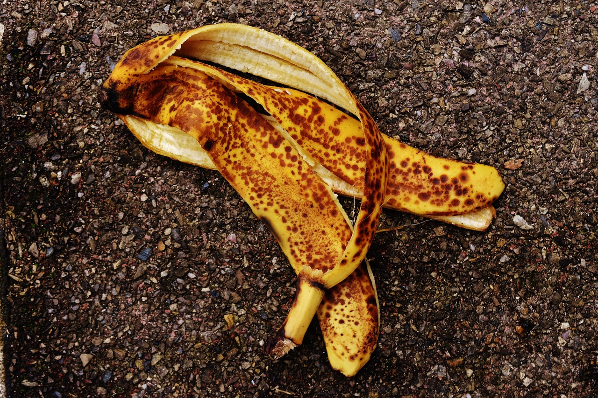
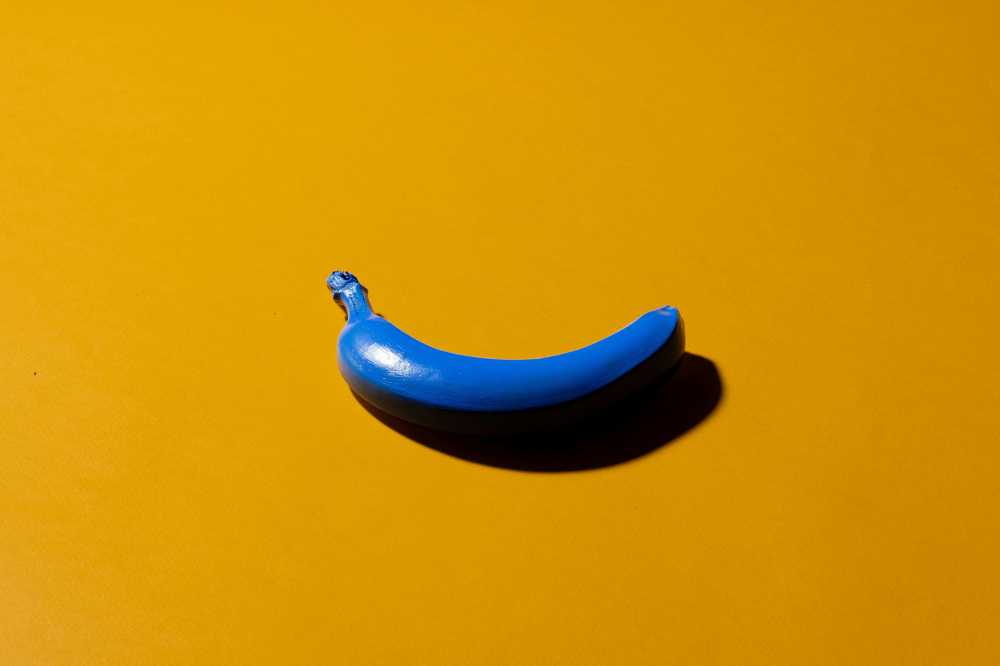
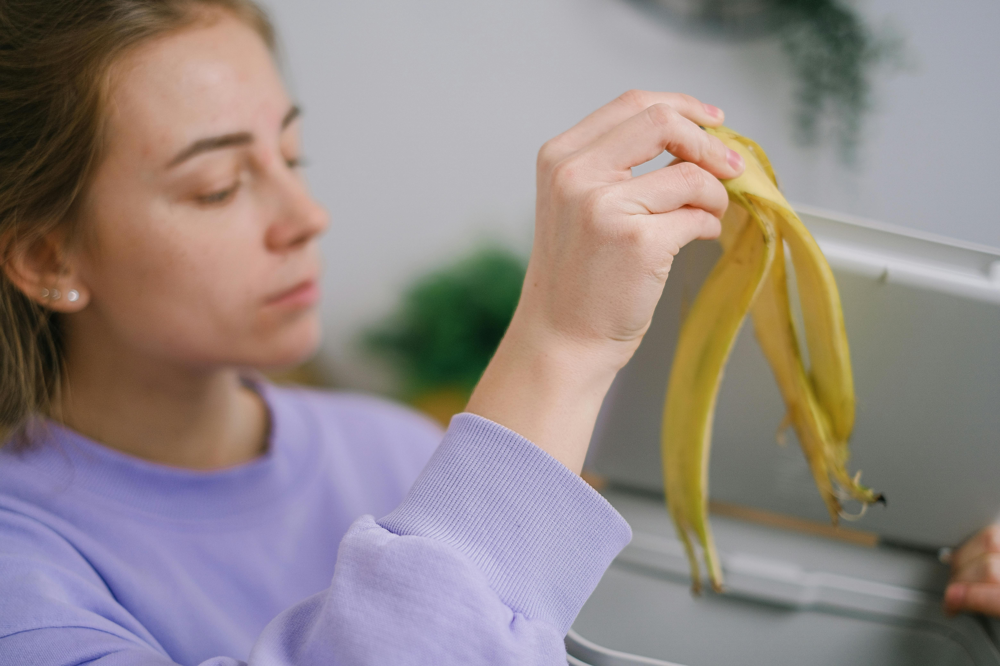

Exploring Banana Peel Pigment

The Science Behind Banana Peel Pigment
Banana peels are rich in natural compounds like polyphenols and carotenoids that give them distinct yellow-brown tones. When extracted, these compounds can act as a natural pigment. Scientists are researching how to stabilize and enhance this pigment for practical use in textiles, inks, and art materials.

How Banana Peels Become a Natural Dye
The process of creating banana peel pigment often involves drying, grinding, and boiling the peels to release their color. This pigment can then be applied to fabrics and paper, producing earthy tones without relying on synthetic chemicals.

Practical Uses of Banana Peel Pigment
Banana peel pigment is being explored as a sustainable alternative to synthetic dyes in textiles, natural inks, and even cosmetics. Its eco-friendly origin makes it appealing for industries looking to reduce their environmental impact.
The Future of Sustainable Pigments
With growing interest in eco-friendly materials, banana peel pigment could play a role in reducing waste while replacing synthetic colorants. Continued research will determine how effective, long-lasting, and scalable this natural pigment can become.